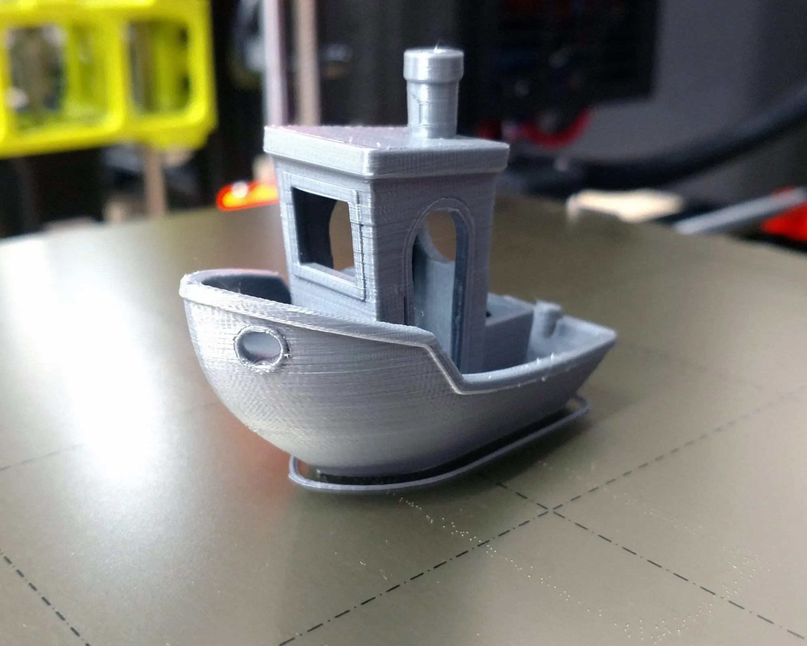

What is 3D Printing?
♦ 3D printing, also known as additive manufacturing, is a process of creating three-dimensional objects from a digital file.♦ Unlike traditional manufacturing methods that involve subtracting material (like carving from a block of wood or metal)
♦
♦ 3D printing adds material layer by layer to build up the object.
How Does It Work?
♦ 1.Design: The process starts with creating a digital 3D model of the object you want to print. This can be done using CAD (Computer-Aided Design) software or by downloading pre-made designs from online repositories.♦ 2. Slicing: The 3D model is then sliced into thin horizontal layers using slicing software. Each layer's data is sent to the 3D printer.
♦
♦ 3.Printing: The 3D printer reads the sliced file and starts building the object layer by layer. It does this by depositing material (such as plastic, metal, resin, or even food ingredients) in precise locations based on the design.
♦ 4.Finishing: After printing, some objects may require post-processing, like removing support structures or sanding to achieve the desired finish.
3D Printing Machine
Types of 3D Printing Technologies:
♦ 1.Fused Deposition Modeling (FDM): This is one of the most common methods where thermoplastic filaments are melted and extruded layer by layer to create the object.♦ 2.Stereolithography (SLA): Uses a liquid resin that is cured (hardened) by a laser or light to create each layer. It's known for high detail and smooth finishes.
♦ 3.Digital Light Processing (DLP): Similar to SLA but uses a projector to flash an entire layer at once, speeding up the process.
Types of support in 3D Printing
1.Tree Support:
♦ Tree supports in 3D printing are a type of support structure that helps hold up overhanging parts of a print. They are called "tree" supports because they resemble the branching structure of a tree. g
♦ This support type is particularly useful for complex or delicate prints where traditional supports might be cumbersome or difficult to remove.
♦ How Tree Supports Work:
♦Tree supports in 3D printing are a type of support structure that helps hold up overhanging parts of a print. They are called "tree" supports because they resemble the branching structure of a tree. This support type is particularly useful for complex or delicate prints where traditional supports might be cumbersome or difficult to remove. How Tree Supports Work: Branching Structure: Instead of solid columns or grids, tree supports create a lightweight, branching structure that minimizes material use and contact points with the print.
 ♦In the world of 3D printing, "normal support" refers to a type of support structure used to prevent the collapse of overhanging or complex geometries during the printing process.
♦In the world of 3D printing, "normal support" refers to a type of support structure used to prevent the collapse of overhanging or complex geometries during the printing process.
♦These supports are temporary structures that are printed alongside the main object and are removed once the print is finished.
♦ Why Use Normal Supports?
♦Prevents Sagging: Without supports, overhanging parts of a print can droop or fail entirely during printing.
♦ Improves Print Quality: Supports help maintain the shape of intricate features, ensuring cleaner lines and details.
♦Enables Complex Designs: Supports allow for the printing of designs with intricate, unsupported features, expanding the possibilities of what can be printed.
This was how the 3D printing machine actually worked
Some examples of 3D Printing:
♦ This support type is particularly useful for complex or delicate prints where traditional supports might be cumbersome or difficult to remove.
♦ How Tree Supports Work:
♦Tree supports in 3D printing are a type of support structure that helps hold up overhanging parts of a print. They are called "tree" supports because they resemble the branching structure of a tree. This support type is particularly useful for complex or delicate prints where traditional supports might be cumbersome or difficult to remove. How Tree Supports Work: Branching Structure: Instead of solid columns or grids, tree supports create a lightweight, branching structure that minimizes material use and contact points with the print.
2.Normal Support:
♦In the world of 3D printing, "normal support" refers to a type of support structure used to prevent the collapse of overhanging or complex geometries during the printing process.♦These supports are temporary structures that are printed alongside the main object and are removed once the print is finished.
♦ Why Use Normal Supports?
♦Prevents Sagging: Without supports, overhanging parts of a print can droop or fail entirely during printing.
♦ Improves Print Quality: Supports help maintain the shape of intricate features, ensuring cleaner lines and details.
♦Enables Complex Designs: Supports allow for the printing of designs with intricate, unsupported features, expanding the possibilities of what can be printed.
This was how the 3D Printing machine actually worked
.mp
Some examples of 3D Printing:
